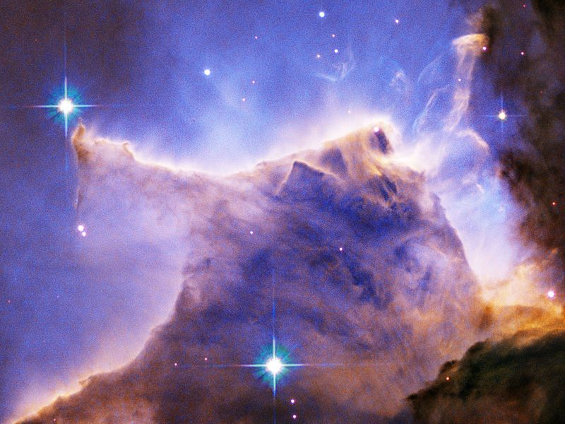
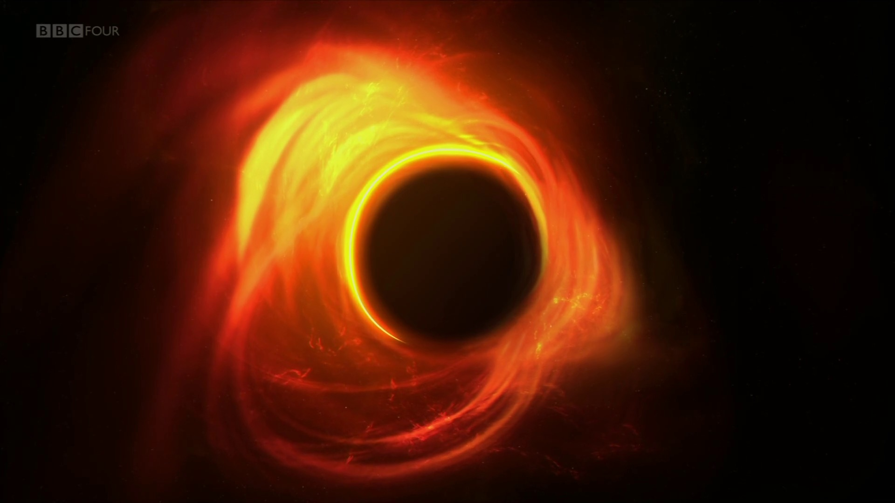
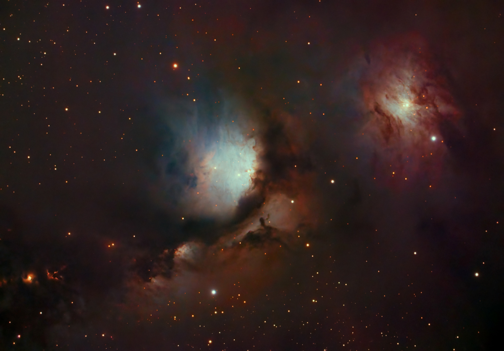
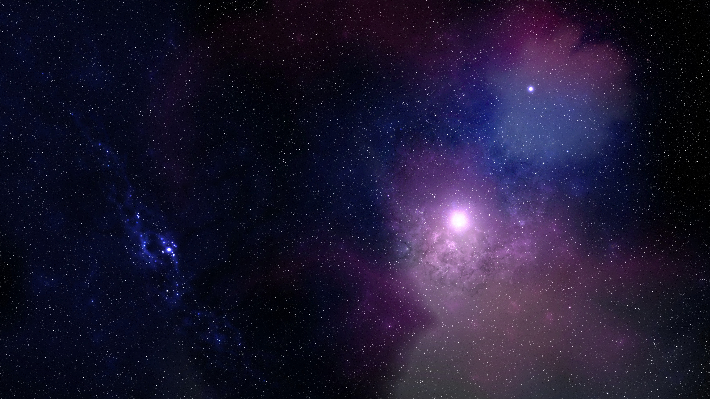
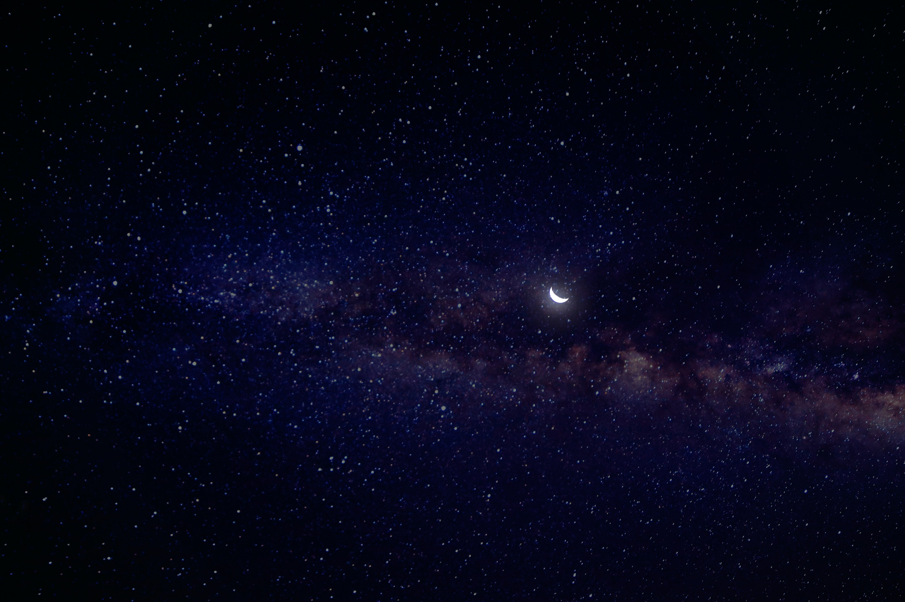
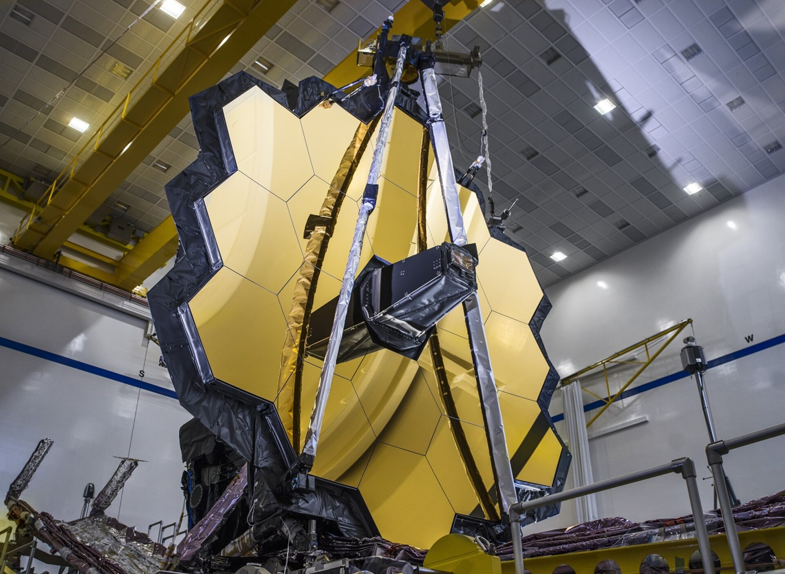
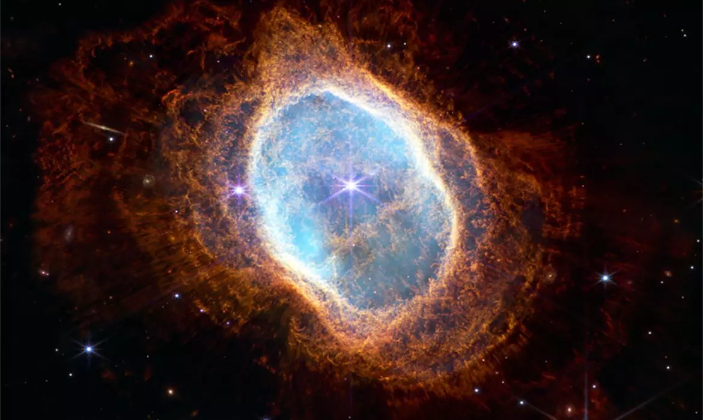
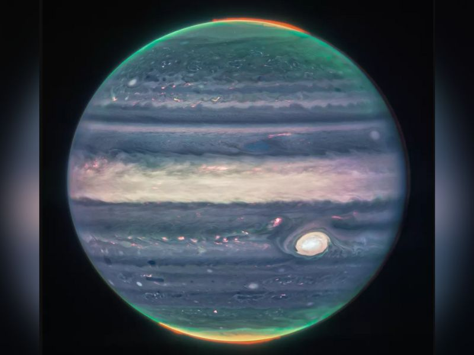
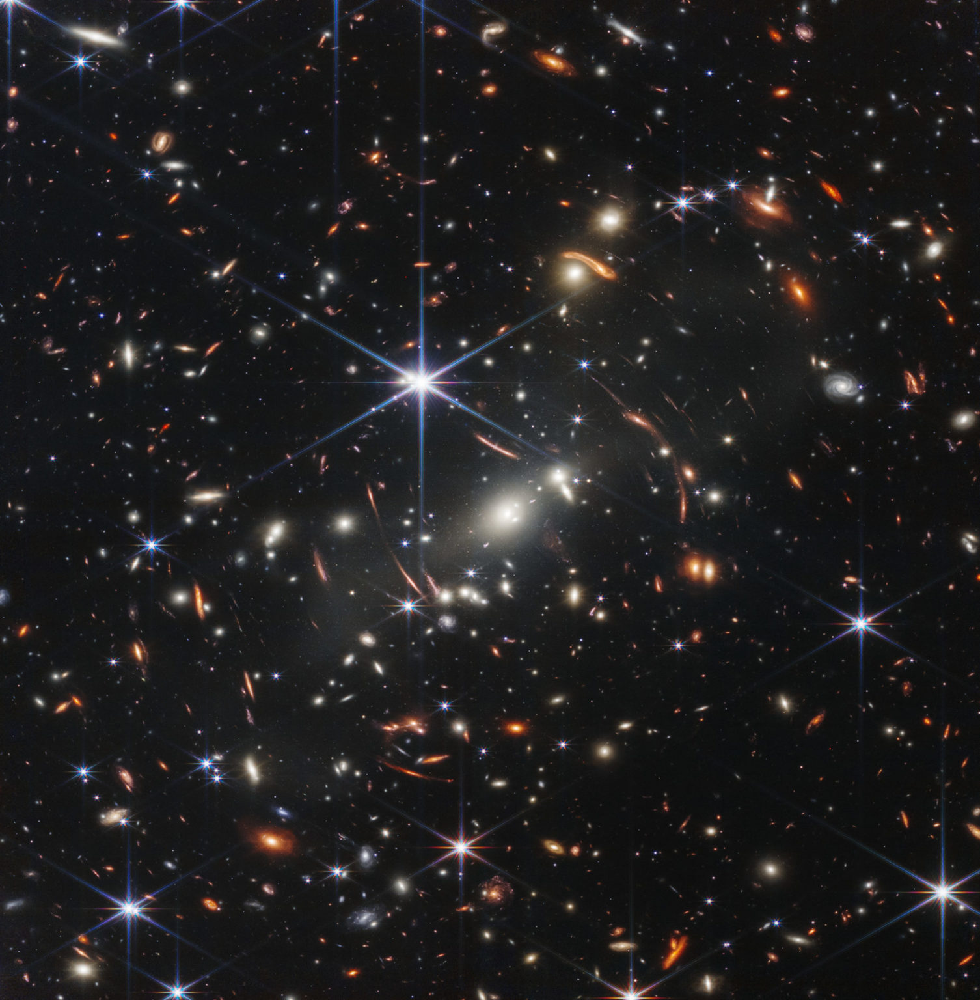
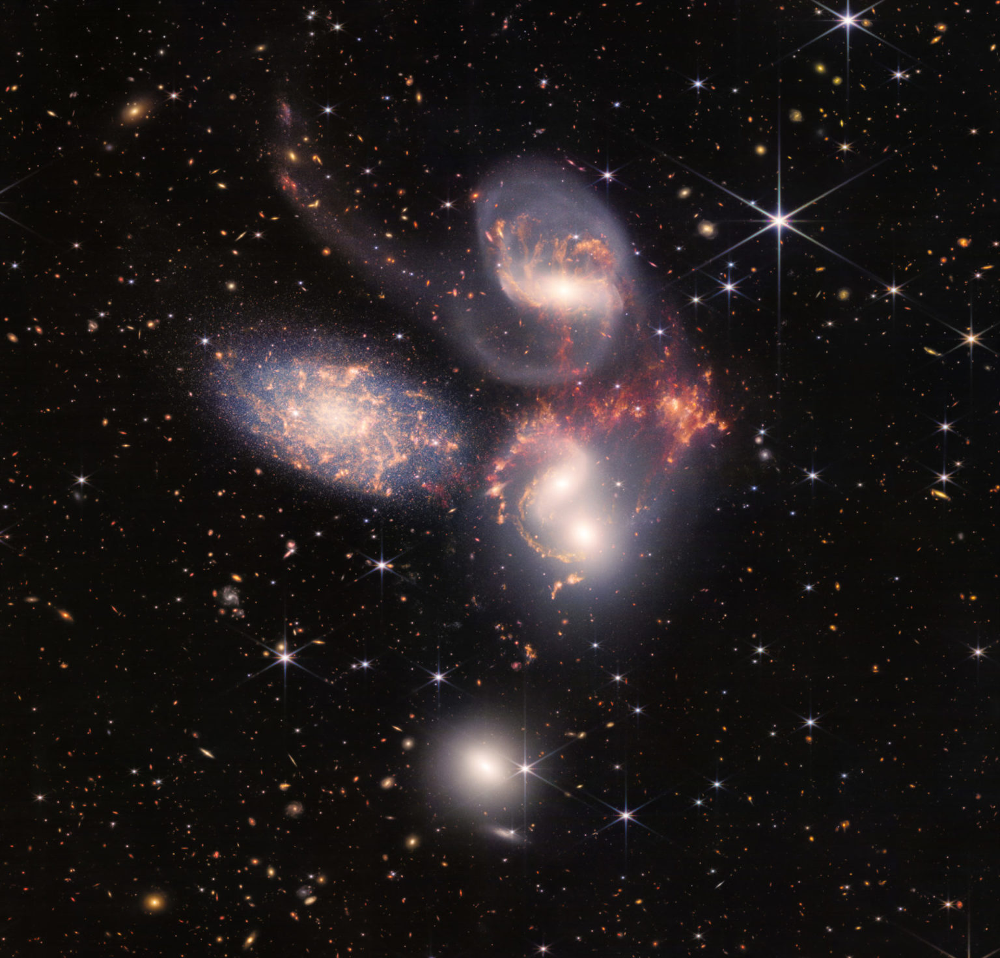

Título do Carrossel






Polaris
A Polaris busca mostrar para você um pouco do universo, um pouco desta imensidão que nos cerca. Tudo ao nosso redor é fascinante, esplêndido e misteiroso, mas porque devemos ter medo do desconhecido? Para quem não conhece a estrela Polaris aqui vai uma breve explicação: Polaris é a estrela mais brilhante da constelação da Ursa Menor, e situa-se aproximadamente no pólo norte celeste, simplesmente a estrela responsável por guiar as navegações no passado e fazer com que todos os navios e marinheiros chegassem ao seu destino, fica sempre na posição norte do horizonte guiando a todos que a procuram. Este site tem o mesmo objetivo, ser a estrela guia, mostrar um pouco do que não vemos constantemente, mostrar a todos nós o grande e imenso desconhecido do universo.
James Webb

Telescópio James webb
O telescópio que revolucionou a forma como hoje podemos ver o universo, algumas imagens deste site tem a sua autoria.

Nebulosa do Anel Sul
Uma nuvem de gás em expansão, envolvendo uma estrela moribunda há quase 2 mil anos-luz de distância da Terra.

Jupter
jupter capturado pelas lentes do james Webb

Aglomerado de galáxia
Conhecido como SMACS 0723, a primeira das fotos tiradas pelo James Webb e reveladas pela Nasa.

Pilares da criação
No novo registro fotográfico obtido, é possível visualizar estrelas recém-formadas, que aparecem nas tonalidades rosa e vermelho, e um rastro deixado por poeira e gases dispersos no espaço.

Quinteto de Stephanr
o primeiro grupo compacto de galáxias descoberto, em 1877.